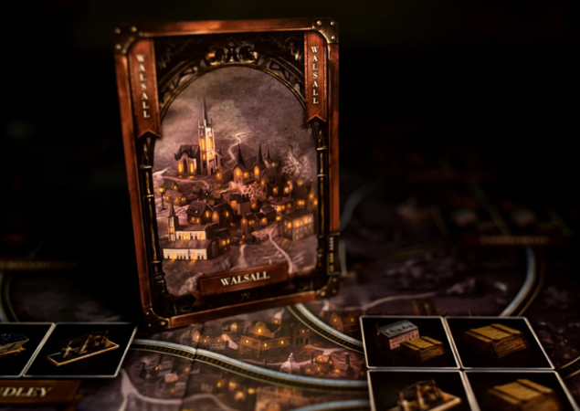

Lauamäng Brass: Birmingham on järg Martin Wallace'i 2007. aasta meistriteosele Brass. Brass: Birmingham on keerukas majanduslik strateegiamäng. Mäng jutustab Birminghami konkureerivate ettevõtjate loo tööstusrevolutsiooni ajal aastatel 1770-1870. Nagu selle eelkäija puhul, tuleb arendada, ehitada ja rajada oma tööstust ja kanalite- ning raudteevõrku, püüdes ära kasutada turu madalaid või kõrgeid nõudmisi.
